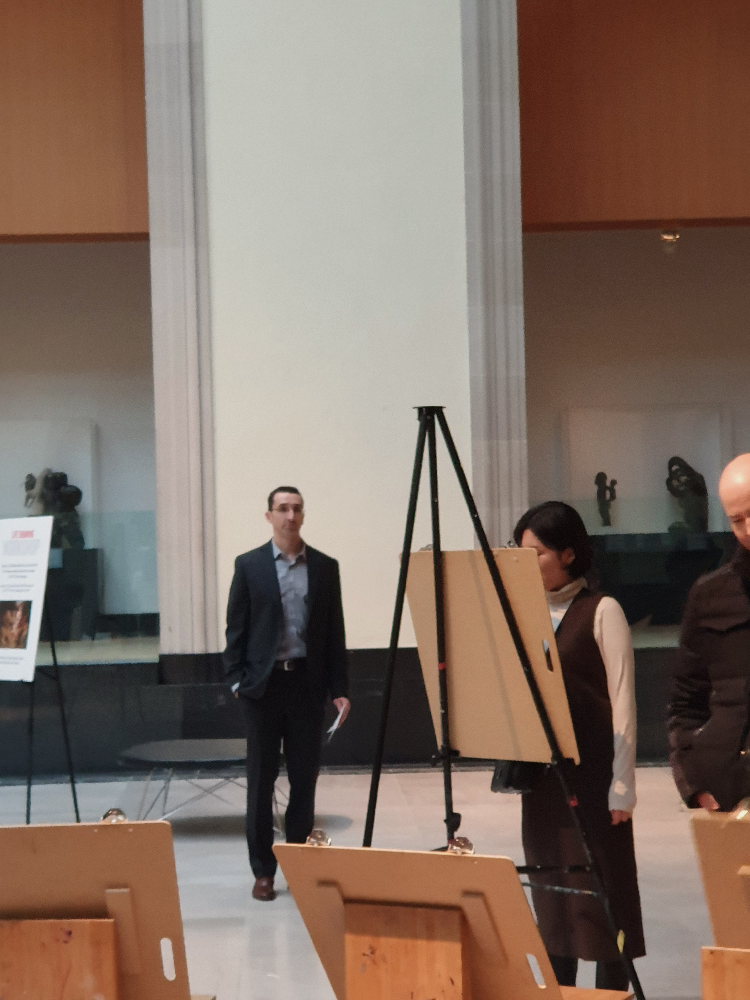

UX Researcher who understands the business and technology
Hyejin Park
UX Researcher who understands the business and technology
Before I study Human-Computer Interaction at McGill (https://act.mcgill.ca/), I worked as an IT Business Analyst for 3 years and a half. I gathered requirements, analyzed as-is use cases of systems and transformed them into functional specifications and To-be use cases. Sometimes I worked on functional wireframes.
In my previous company, I also worked as a junior project manager for a 6-month project. I built a RACI chart and WBS for the project. In addition, I am familiar with Design thinking as I took a capstone course certified Microsoft Korea in undergraduate.
UX
Technical skills
Data analysis